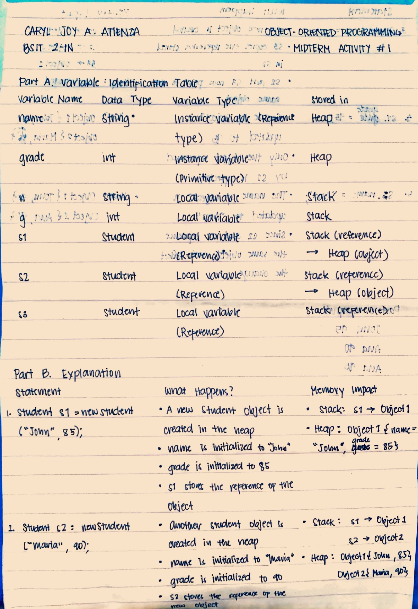
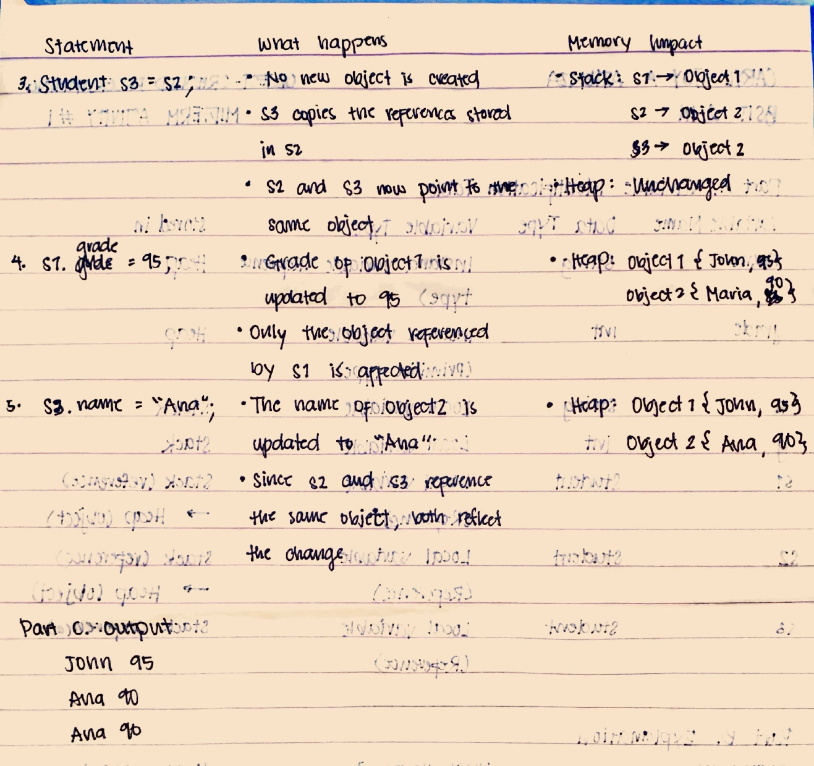

This activity involves tracing a Java program to identify variable types, data types, and their storage locations within memory, specifically focusing on the difference between primitive data and object references.
Overview
The activity covers variable identification and memory management concepts such as the Stack and Heap. It specifically requires a step-by-step trace of object instantiation, reference assignment, and member variable updates to understand how memory changes during execution.
Output
These are my handwritten answers for the assignment.


Reflection
Tracing the memory changes for this activity was a massive lightbulb moment for understanding how Java handles objects versus primitives. I used to think of variables as just names, but seeing how s3 = s2 creates two references pointing to the same object in the Heap—meaning changing "Ana" for one affects the other—really clarified why "clean architecture" and disciplined naming are so important. Coming from C, the way the JVM manages these references instead of me handling manual pointers makes the logic feel much safer, even though the underlying mechanics of memory impact are still just as critical. It was satisfying to map out the Stack and Heap changes step-by-step, as it turned a conceptual topic into something very visual and logical. Seeing the final output match my trace perfectly definitely makes me feel more confident in handling complex object-oriented structures moving forward.